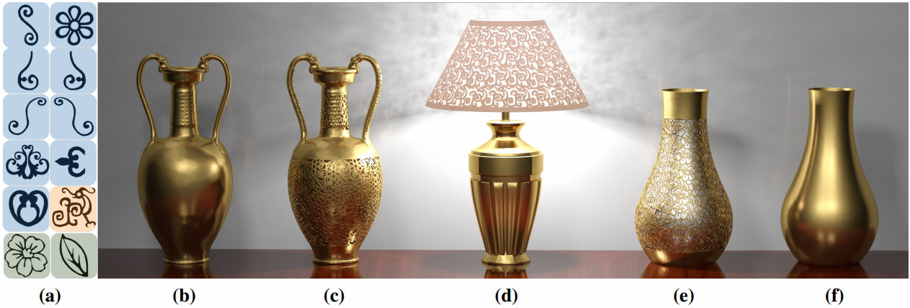

|

Figure 1： With the filigree synthesis technique proposed in this paper applied to input surfaces (b) and (f), the generated models (c-e) generally present more fascinating and aesthetic appearance than the base models. Note that the primitive filigree patterns used for (c-e) are shown in (a), whose backgrounds are respectively painted in blue, orange and green. The input models in (b), (d) and (f) are courtesy of Kevin Xu, Open3DModel and PinShape, respectively. AbstractFiligrees are thin patterns found in jewelry, ornaments and lace fabrics. They are often formed of repeated base elements manually composed into larger, delicate patterns. Digital fabrication simplifies the process of turning a virtual model of a filigree into a physical object. However, designing a virtual model of a filigree remains a time consuming and challenging task. The difficulty lies in tightly packing together the base elements while covering a target surface. In addition, the filigree has to be well connected and sufficiently robust to be fabricated. We propose a novel approach automating this task. Our technique covers a target surface with a set of input base elements, forming a filigree strong enough to be fabricated. We exploit two properties of filigrees to make this possible. First, as filigrees form delicate traceries they are well captured by their skeleton. This affords for a simpler definition of operators such as matching and deformation. Second, instead of seeking for a perfect packing of the base elements we relax the problem by allowing appearance preserving partial overlaps. We optimize a filigree by a stochastic search, further improved by a novel boosting algorithm that records and reuses good configurations discovered during the process. We illustrate our technique on a number of challenging examples reproducing filigrees on large objects, which we manufacture by 3D printing. Our technique affords for several user controls, such as the scale and orientation of the elements. Downloads
Bibtex@article{chen2016synthesis,
title={Synthesis of filigrees for digital fabrication},
author={Chen, Weikai and Zhang, Xiaolong and Xin, Shiqing and Xia, Yang and Lefebvre, Sylvain and Wang, Wenping},
journal={ACM Transactions on Graphics (TOG)},
volume={35},
number={4},
pages={98},
year={2016},
publisher={ACM}
}
|